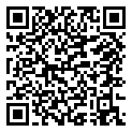

🟢 4ème · Période 3 · Quiz
Quiz : Programmation et automatisation (mBlock / Scratch)
Teste tes connaissances sur la programmation par blocs, les sprites, les messages et les interfaces graphiques.
🔗 Lien direct vers cette page

45Q
Scanne le QR code, ou saisis ce code sur la page d'accès direct du site.
https://lyceefrancaisdetananarive.github.io/technologie/go.html?c=45Q